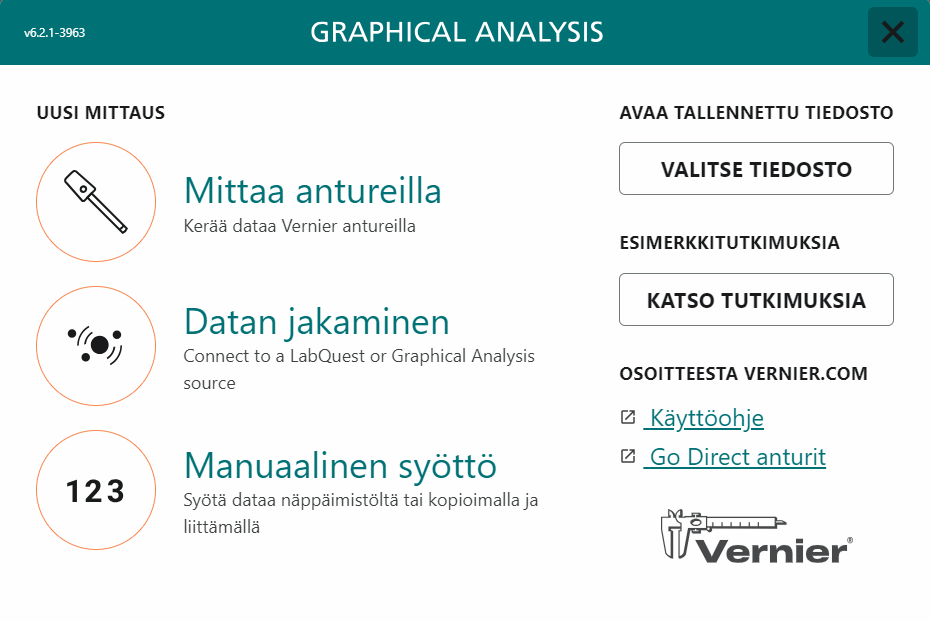

Anturi mittaa suuretta, ja Graphical Analysis Pro tallentaa sen lukemat tasaisin väliajoin. Näin saat mittaussarjan, jossa on satoja tai tuhansia lukemia, ja voit lukea siitä arvoja, keskiarvoja ja pinta-aloja.
Työvälineen käyttö: tarkista yksityiskohdat oman ohjelmasi tai laitteesi ohjeesta.
Tässä ohjeessa opit
- valmistelemaan anturin mittaukseen ja valitsemaan sopivan mittaustaajuuden ja keston
- lukemaan mittausohjelman kuvaajasta arvoja, keskiarvoja ja pinta-aloja
- tallentamaan mittauksen ja viemään datan tiedostoon
Mihin tarvitset tätä
Tutkimuksessa Hypyn tutkiminen voimalevyllä voimalevy tallentaa voiman ajan funktiona, tutkimuksessa Kuuman veden jäähtyminen lämpötila-anturi kirjaa lämpötilan pitkän ajan, ja tutkimuksessa Liikemäärän säilyminen törmäyksissä liikeanturit mittaavat vaunujen liikkeen.
Työvaiheet
-
Kytke ja tunnista anturi. Valitse aloitusikkunasta Mittaa antureilla. Kytke Go Direct -anturi USB-johdolla tai Bluetoothilla: langattoman anturin valitset löydettyjen langattomien laitteiden luettelosta (englanninkielisessä versiossa Discovered Wireless Devices) ja yhdistät sen (Connect). Tarkista, että ohjelma näyttää oikean suureen ja yksikön. Kokeile, että lukema muuttuu, kun muutat mitattavaa suuretta, esimerkiksi painat voima-anturia kevyesti.

Kuvakaappaus: Graphical Analysis (suomenkielinen käyttöliittymä). -
Nollaa anturi, jos se on mahdollista. Voima-anturi ja voimalevy nollataan kuormittamattomina, jotta lukema on nolla ilman voimaa. Napsauta anturin lukemaa ja valitse nollaus (englanninkielisessä versiossa Zero). Lukema voi ajan mittaan ryömiä, joten nollaa ennen jokaista mittaussarjaa. Kirjaa, missä tilassa nollasit: jos nollaat punnustelineen roikkuessa anturissa, anturi näyttää vain lisätyn voiman.
-
Valitse mittaustaajuus ja kesto. Avaa mittausasetukset (englanninkielisessä versiossa Data Collection Settings) ja valitse tilaksi ajan funktiona mittaaminen (Time Based). Ikkunan alareunan tilarivillä näkyvät valittu tila ja mittaustaajuus, esimerkiksi "Tila: Ajan funktiona" ja "Nopeus: 2 mittauspistettä/s". Mittaustaajuus kertoo, montako lukemaa anturi tallentaa sekunnissa. Nopea tapahtuma, kuten hyppy tai törmäys, vaatii suuren taajuuden, jotta lyhyt huippu ei jää kahden lukeman väliin. Hidas ilmiö, kuten jäähtyminen, ei tarvitse tiheää mittausta, mutta mittauksen on kestettävä koko ilmiön ajan. Kestoksi valitset kiinteän ajan (englanninkielisessä versiossa End Collection: After Fixed Duration) tai lopetat itse (Manually).
-
Käynnistä mittaus tarvittaessa liipaisulla. Lyhyen tapahtuman alku jää helposti tallentumatta. Kun valitset aloitukseksi liipaisun (englanninkielisessä versiossa On a Triggering Event), mittaus alkaa, kun valitun anturin lukema saavuttaa asettamasi kynnysarvon. Muuten aloita tallennus ennen tapahtumaa ja lopeta vasta sen jälkeen.
-
Käytä tapahtumapohjaista mittausta, kun valitset arvot itse. Tapahtumapohjaisessa tilassa (englanninkielisessä versiossa Event Based) anturin lukema tallennetaan vain hetkinä, jotka itse valitset. Vaihtoehdolla, jossa arvo kirjoitetaan jokaiselle tapahtumalle (Events with Entry), kirjoitat jokaiselle lukemalle oman arvon, esimerkiksi lampun etäisyyden tai punnusten massan, jolloin saat suoraan kuvaajan lukemasta sen funktiona.
-
Tee koemittaus. Kokeile asetuksia ennen varsinaista mittausta. Tarkista, että koko tapahtuma tallentuu, lukemat eivät jää kiinni mittausalueen ylärajaan ja kuvaajassa näkyvät tapahtuman tärkeät vaiheet.
-
Lue arvoja kuvaajasta. Lukutyökalulla (englanninkielisessä versiossa Examine) näet napsauttamasi kohdan ajan ja lukeman. Lue näin esimerkiksi lepojakson lukema tai liikkeen huippuarvo.
-
Rajaa väli tilastoille ja sovituksille. Valitse kuvaajasta aikaväli vetämällä sen yli, esimerkiksi lepojakso, ja valitse valinnan viereen avautuvasta valikosta tai kuvaajatyökalujen valikosta (kuvaajan vasemman alakulman kuvake) Tilastotiedot: saat välin lukemien keskiarvon. Samalla tavalla sovitus tehdään vain valitulle välille, jossa malli pätee.
-
Määritä pinta-ala. Valitse väli ja valitse samasta valikosta Integraali. Ohjelma laskee kuvaajan ja aika-akselin välisen pinta-alan valitulla välillä. Voima–aika-kuvaajan pinta-ala on voiman impulssi yksikössä $\text{N} \cdot \text{s}$, ja kiihtyvyys–aika-kuvaajan pinta-ala on nopeuden muutos yksikössä $\text{m/s}$.
-
Tallenna ja vie data. Tallenna mittaus ohjelman omana tiedostona (.gambl) ja kirjaa, mitä kukin mittaus esittää. Ohjelman vientitoiminnot vievät taulukon CSV-tiedostoksi (englanninkielisessä versiossa Export data as csv) ja kuvaajan kuvaksi (Export graph as png). Mittauksesta laskettavat uudet suureet tehdään laskettuina sarakkeina (Taulukko ja lasketut sarakkeet).
Ohjelmakohtaisia vinkkejä
Valoportti
Valoportti mittaa ajan $\Delta t$, jonka kappaleen liuska katkaisee valonsäteen. Kun liuskan leveys $b$ tunnetaan, kappaleen keskinopeus portin kohdalla on $v = \tfrac{b}{\Delta t}$. Mittaa leveys työntömitalla. Valitse valoportille valoporttiajoitus (englanninkielisessä versiossa Photogate Timing) ja sen vaihtoehdoista mittaustapa, esimerkiksi Speed Through Gate nopeudelle portin kohdalla, Linear Motion useiden katkosten liikkeelle tai Pendulum Period heilurin jaksonajalle.
Liikeanturi
Liikeanturi mittaa etäisyyttä kappaleeseen ja laskee siitä nopeuden ja kiihtyvyyden. Anturilla on vähimmäisetäisyys, jota lähempää se ei mittaa luotettavasti; tarkista se laitteen ohjeesta. Nopeus on yleensä positiivinen, kun kappale loittonee anturista, ja negatiivinen, kun se lähestyy. Pidä mittaussuunta vapaana muista esineistä.
Puhelimella mitattu data
Jos mittaat puhelimen sovelluksella, tallenna mittaus CSV-tiedostona ja avaa se Graphical Analysis Prossa. Tarkista yksikkö ja se, sisältääkö kiihtyvyyslukema putoamiskiihtyvyyden.
Tavallisimmat virheet
- Anturia ei nollattu. Lepolukema ei ole nolla, ja jokaisessa lukemassa on sama siirtymä. Pinta-alaan siirtymä kertyy koko mittausajalta.
- Mittaustaajuus oli liian pieni. Huippu näyttää kulmikkaalta tai matalammalta kuin toistetuissa mittauksissa. Kasvata taajuutta mittausasetuksissa ja mittaa uudelleen.
- Tapahtuman alku puuttuu. Mittaus käynnistyi liian myöhään. Aloita aiemmin tai käytä liipaisua.
- Lukema jäi mittausalueen ylärajaan. Kuvaajassa on tasainen katto. Valitse suurempi mittausalue, jos laitteessa on sellainen, tai pienennä kuormaa.
- Puhelimen lukemat ovat $g$:n kerrannaisia. Jos lepolukema on noin $1{,}00$, kerro lukemat putoamiskiihtyvyydellä $9{,}81\,\text{m/s}^2$ lasketussa sarakkeessa.
- Raakadataa ei tallennettu. Analyysia ei voi tarkistaa eikä toistaa. Tallenna jokainen mittaus.
Tarkista ennen kuin jatkat
- Anturi näyttää oikean suureen ja yksikön, ja se on nollattu, kun laite sen sallii.
- Mittaustaajuus ja kesto riittävät koko tapahtumaan.
- Mittaus on tallennettu, ja tiedät, mitä kukin tiedosto esittää.
Tarvitset tätä tutkimuksissa: Äänen nopeus kulkuajasta, Hissin kulkema matka kiihtyvyydestä, Hypyn tutkiminen voimalevyllä, Sähkömagneettisen induktion tutkiminen, Kuuman veden jäähtyminen, Kaasun tilanyhtälön kokeellinen tutkiminen, Kondensaattorin kapasitanssin määrittäminen, Leikkiauton nopeus ja lähtökorkeus, Liikemäärän säilyminen törmäyksissä, Liukukitkakertoimen määrittäminen, Äänen resonanssi putkessa, Tuulivoimalan tutkiminen, Uppokuumentimen hyötysuhteen määrittäminen, Valaistusvoimakkuuden riippuvuus etäisyydestä